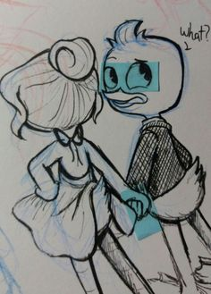

La Traición
Paco entregó el Corazón Dorado por amor.

Valeria desapareció esa misma noche.
Rico descubrió la traición y la decepción en sus ojos fue peor que cualquier castigo.
Paco lo perdió todo por confiar ciegamente.